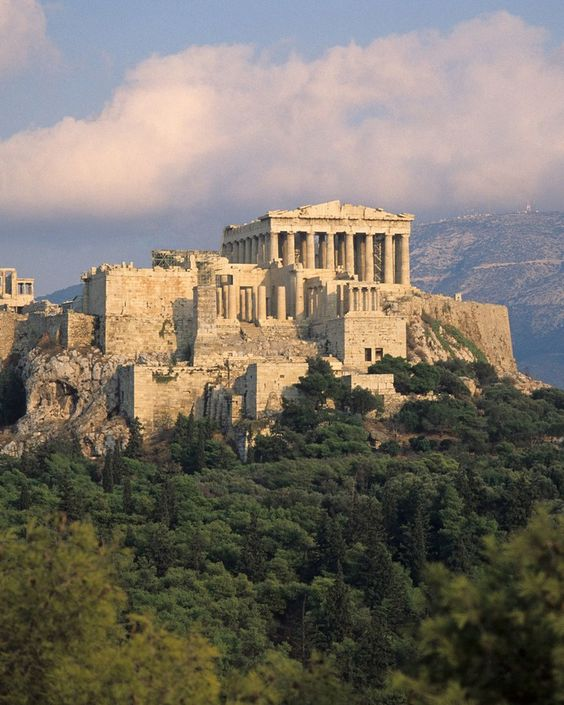
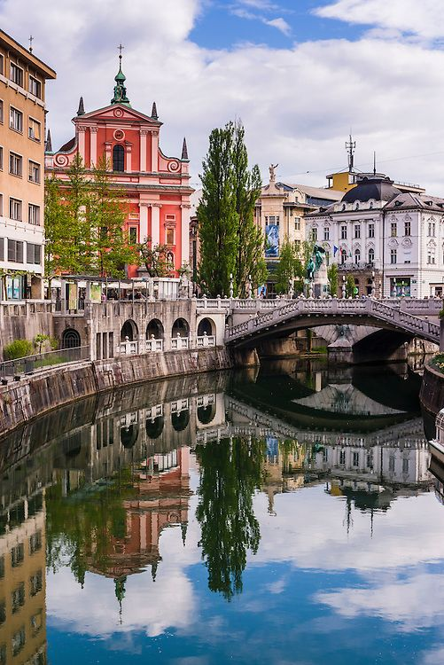

BIOGRAPHY
Personal Info
Meet Mihaela, a driven and tech-savvy college student with a deep passion for computers and technology. From an early age, Mihaela found herself drawn to the world of computers, fascinated by their power to innovate, solve problems, and connect people across the globe.
Name: Mihaela Mojsoska
Country: Macedonia
Age: 20
Email: mojsoskamihaela@gmail.com
Address: ul.Braka Miladinovci n.67
Education: High School
Something About Me
As a college girl who loves computers, Mihaela recognizes the transformative power of technology.
She envisions a future where technology is harnessed for the betterment of society. She is passionate
about using her skills to create meaningful change, whether by developing innovative software solutions,
working on cybersecurity initiatives, or exploring the potential of artificial intelligence.
Beyond her academic pursuits, Mihaela actively engaged in various extracurricular activities to
enhance her personal growth and leadership skills. She played a pivotal role in several student
organizations dedicated to promoting gender equality and fostering inclusivity on campus. As an advocate
for women's rights, Mihaela organized workshops, panel discussions, and awareness campaigns that aimed to
dismantle stereotypes and break down barriers for underrepresented groups.
As she continues her journey as a college student, she remains committed to her passion, ready to tackle
challenges, and eager to shape the future of the digital age.
TRAVEL
Greece
Athens, known as the cradle of democracy, carries an air of significance and reverence. Its historical landmarks transport visitors back in time, offering a glimpse into the glory of ancient Greece. At the heart of the city lies the Acropolis, an iconic hill crowned by the Parthenon, a majestic temple dedicated to the goddess Athena. Standing atop the Acropolis, one can marvel at the breathtaking panoramic views of the city and reflect on the extraordinary achievements of the ancient Greeks. Her experience in Athens had expanded her knowledge of the past, introduced her to a timeless culture, and sparked a desire that would motivate her future journeys and explorations.
Slovenia
Nestled in the heart of Europe, Slovenia's capital city, Ljubljana, exudes a unique charm that captures the essence of the country's natural beauty, rich history, and warm hospitality. Ljubljana is a hidden gem, a city where old meets new, blending stunning architecture, vibrant culture, and a laid-back atmosphere. Presided over by the imposing Ljubljana Castle, perched atop a hill, the city's historic core is adorned with Baroque and Art Nouveau buildings, charming squares, and cozy cafes. Strolling along the Ljubljanica River, lined with quaint bridges and lively outdoor terraces, one can't help but be enchanted by the city's romantic ambiance.